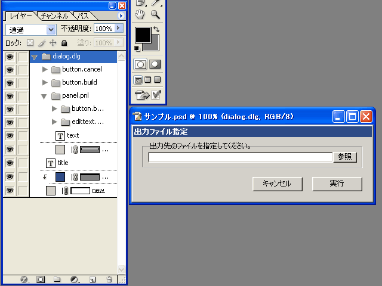
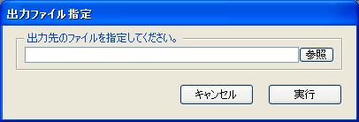
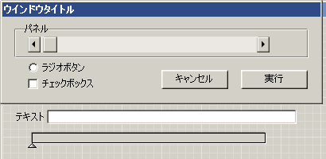
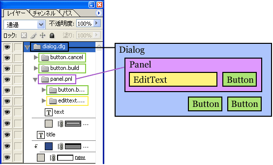
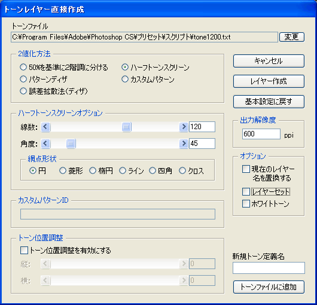

スクリプトで使用するダイアログのパーツ配置をPhotoshop上で行います。


※このスクリプトはPhotoshopCS以降専用です。
同梱のパーツセットを開いてください。

使用できるパーツの基本形が揃っていますので、ここから各パーツをレイヤーセットごとコピー＆ペーストし、シェイプを操作して大きさをあわせる事でデザインを作成できます。
各パーツのレイヤーセット内にはそれぞれの見た目や属性を実現するためいくつかのレイヤーが含まれます。サイズを変更するときはベースとなるシェイプからはみ出さないように配置を変更してください。
レイヤーセットの親子関係がそのままダイアログパーツの親子関係になります。そのため、レイヤーセットの親子関係は正しく設定する必要があります。

簡単に説明すると、ダイアログクラスが親で、他のパーツは全てその中に入ります。またパネルは中に子を持つことが出来ますので、パネルの中に表示するパーツはすべてそのパネルの子になります。
親子関係が正しくない場合、見た目は同じでも押すことの出来ないパーツになったり、見えなくなったり、最悪の場合はスクリプトが正しく動作しません。
各パーツのレイヤーセットはこのスクリプトで扱うため、特別なルールの名前になっています。
クラス名.実体名
「Dog.Pochi」ということです。クラス名はスクリプトを出力するときに種類を判断するのに使用し、出力されたスクリプト内では実体名でこの種類のパーツを作成します。これは後で出力されたスクリプトを使用するときに使う名前になるので覚えておいてください。
下はサンプルで出力したスクリプトです。名前や親子関係をレイヤー構造と見比べてみてください。
createDialog_DLG().show(); // テスト用
// ===========================================================================
function createDialog_DLG(){
var dialogResource = "dialog { text:'出力ファイル指定', bounds:[0, 0, 400, 106], "
dialogResource += " pnl: Panel { text:'出力先のファイルを指定してください。', bounds:[15, 8, 385, 51], "
dialogResource += " ebox: EditText { bounds:[10, 16, 320, 34], }, "
dialogResource += " browse: Button { text:'参照', bounds:[320, 16, 360, 34], }, "
dialogResource += " },"
dialogResource += " build: Button { text:'実行', bounds:[300, 66, 384, 90], }, "
dialogResource += " cancel: Button { text:'キャンセル', bounds:[200, 66, 284, 90], }, "
dialogResource += " }";
var dlg = new Window( dialogResource );
dlg.center();
return dlg;
}
// ===========================================================================
実体名は好きな名前が使用できます。クラス名は変更しないでください。
また、中に含まれるレイヤー名は変更しないでください。
各パーツ内のテキストは書き換えられますが、パーツの外枠からはみ出さないように注意してください。パーツの大きさはレイヤーセット全体の外枠から取得しているため、はみ出したパーツがある場合は大きさが正しく取得できません。
また、チェックボックス、ラジオボタンなどはテキストによってそのサイズが変化します。スクリプト内で動的に変更する場合は、予想される最長のテキストを入力して作成してください。
このスクリプトでは追加プロパティには対応していません。出力したスクリプトにあとで追加してください。
こんな感じのダイアログを作るのも比較的楽になります。
